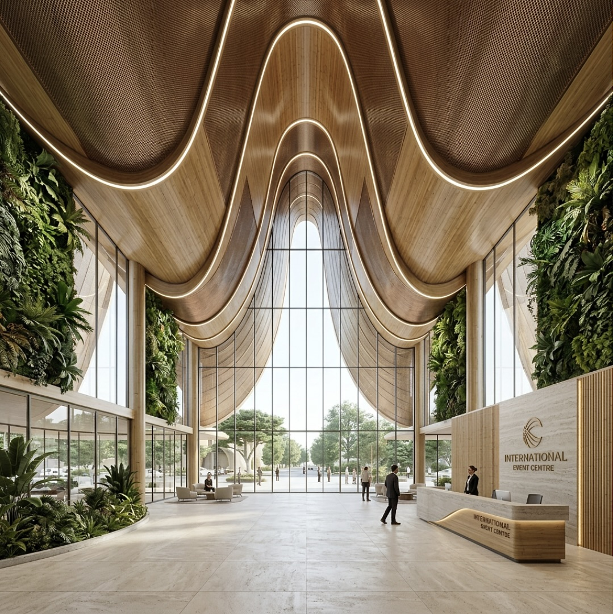
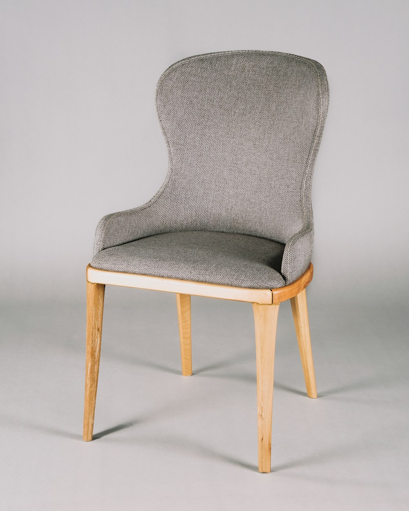
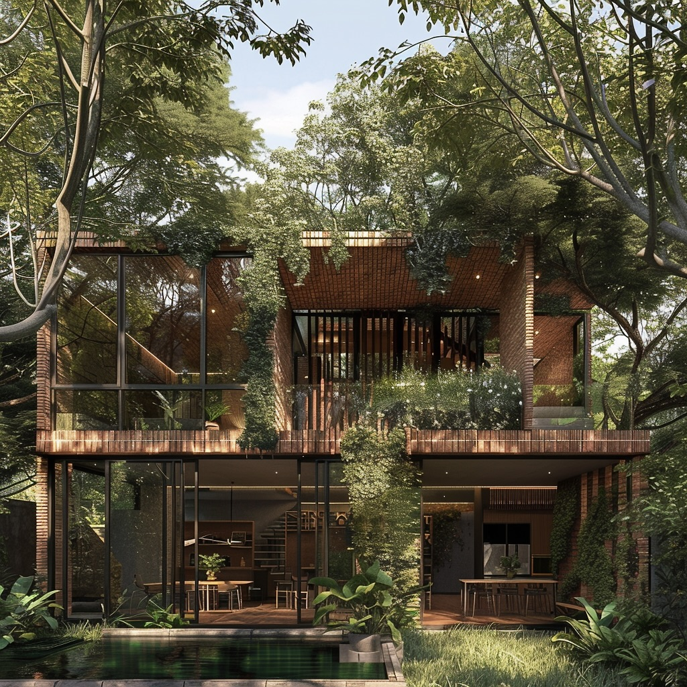
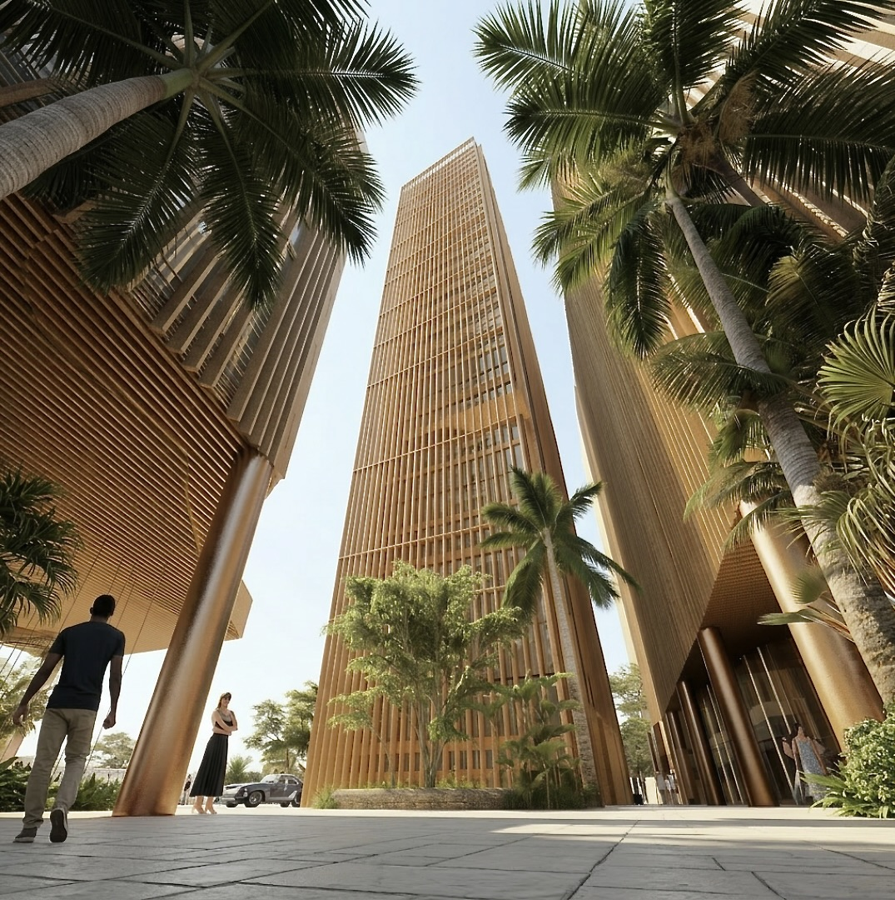

ArchitectureSTUDIO COKA
Spaces designed around life.
Thoughtful architecture, interiors, and construction shaped by climate, context, and the people who use them.
Explore Studio COKA ↗Architect. Designer. Educator.
Designing spaces. Sharing knowledge. Building community.
I’m Crystal Kizor—architect, designer, and founder of Studio COKA. My work connects spaces, objects, education, and community, rooted in African contexts.
 Architect. Designer. Founder.
Architect. Designer. Founder.Explore the practices, platforms, and communities Crystal is building—and find where you fit in.

ArchitectureThoughtful architecture, interiors, and construction shaped by climate, context, and the people who use them.
Explore Studio COKA ↗
Product designFurniture and products rooted in African materials and ideas, bringing function and character into daily life.
Explore ELEvated ↗Conversations on African cities, climate-responsive design, entrepreneurship, and the future of the built environment.
Explore speaking ↗Helping architects learn, grow, and build better careers—alongside personal research, writing, and media.
Learn with TEA ↗ Community & purpose
Community & purposeExpanding educational opportunity through AKO Alliance, and nurturing faith, identity, and purpose through Alive and Free.
Explore the initiatives ↗I'm Crystal Kizor. My work moves between architecture, design, education, and purpose. Different disciplines. A shared curiosity about how we live—and what we can make better.
From a thoughtfully designed space to an idea that opens a door, each part of my world is a different way of building possibility.
Explore Studio COKA’s architecture and interiors, and furniture and product design through ELEvated.
Studio COKA · ELEvated
Explore spaces & objects ↗02 / KNOWLEDGE & IDEASShare what matters.TEA · Speaking · Research & writing
Explore knowledge & ideas ↗03 / PEOPLE & PURPOSEOpen possibilities.AKO Alliance · Alive and Free
Explore people & purpose ↗Architecture, interior design, and construction. Crystal leads the studio’s creative direction as Design Director.
Explore Studio COKA’s portfolio ↗

THOUGHTFUL. CLIMATE-RESPONSIVE. HUMAN.
Spaces shaped by climate, context, and the people who live with them.
Enugu, Nigeria · Civic / cultural · 2024
Projects presented in Studio COKA’s portfolio. Crystal’s studio role: Design Director.
View the studio’s project details ↗ELEvated brings African context, materials, and ideas into furniture and products made for living.
Collection photography and a verified shop destination are awaiting confirmation. The image shown is a design reference.
Ask Crystal about ELEvated ↗A place for architects and built-environment professionals to learn, grow, and build better careers. Crystal shares practical thinking on climate, cities, and how we build.
Learn with TEA: read a published insight ↗A practical look at airflow, orientation, materials, and designing for comfort.
Read the article ↗TEDxPortHarcourt lists Crystal as a speaker at its 2025 event.
Explore Crystal’s published perspectives on the decisions behind better buildings and places.
Design with Natural Light: 6 Intentional Strategies ↗Read more from Crystal ↗CRYSTAL KIZOR / PEOPLE & PURPOSECreating opportunities for young people. Making room for purpose, belonging, and growth.
Expanding educational opportunity for children and young people. Crystal’s public profile describes a mission spanning school access, family enterprise, and support for innovative ideas.
Connect about supporting AKO Alliance ↗A Christian youth movement centred on truth, healing, identity, purpose, and life in Christ—through conversations, gatherings, and worship.
Connect about joining Alive and Free ↗I’m here to… Choose the part of Crystal’s world that fits your next step.
For architecture, start with Studio COKA. For personal invitations and collaborations, connect with Crystal on LinkedIn.